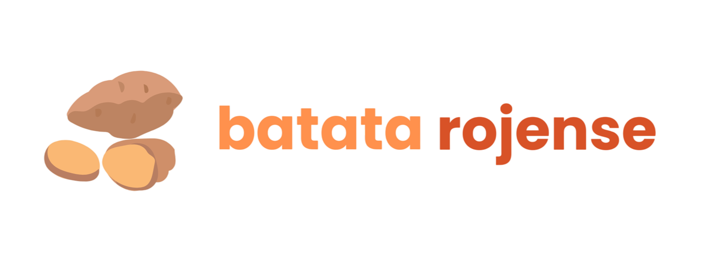
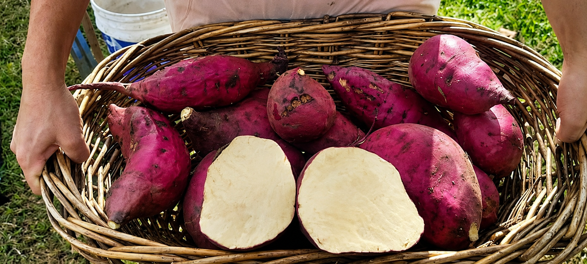
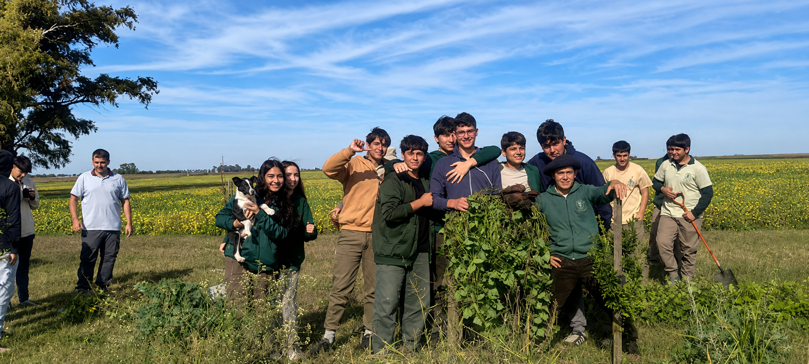
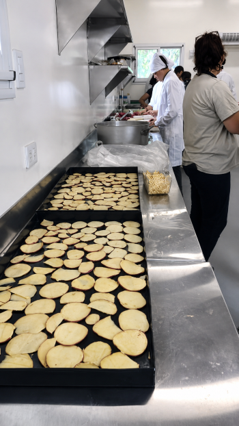

De la tierra a tu mesa
Un proyecto educativo-productivo que nace del trabajo colectivo
en la localidad de Rojas, Buenos Aires. Cultivamos batatas con
técnicas agroecológicas, promoviendo el aprendizaje y la
soberanía alimentaria.

Nuestra filosofía
Creemos que la mejor forma de aprender es con las manos en la tierra.
Nuestro proyecto une educación, producción y comunidad en un espacio
donde todos crecemos juntos.
Cultivo sustentable sin agroquímicos, respetando los ciclos naturales de la tierra.
Talleres prácticos donde estudiantes aprenden producción agrícola desde la semilla.
Trabajo colaborativo entre escuelas, familias y productores locales.
Lo que hacemos
Cada producto que elaboramos nace de un proceso cuidado: desde la preparación de la tierra hasta el empaque final. Nuestros estudiantes participan en cada etapa, aprendiendo sobre nutrición, economía social y trabajo en equipo.
Ofrecemos batatas frescas, chips deshidratados, dulces y conservas, todos elaborados con técnicas tradicionales y materias primas de nuestra propia huerta.
